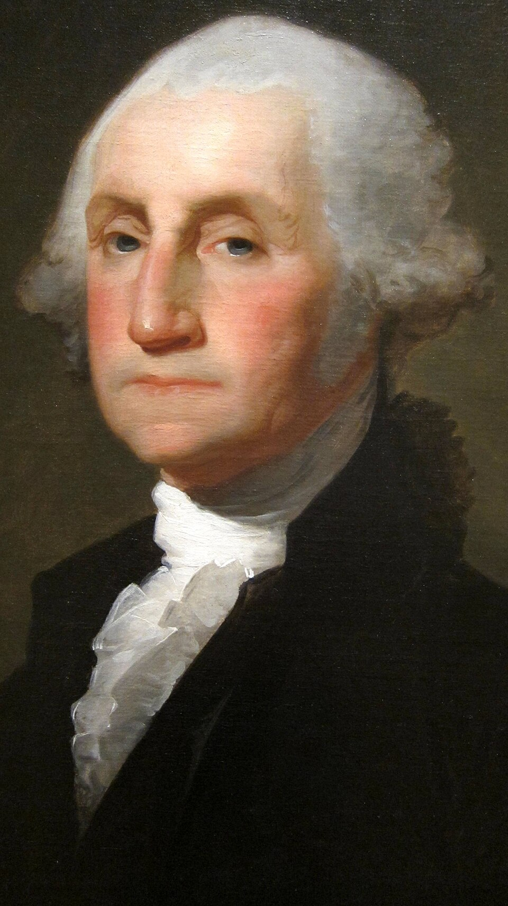
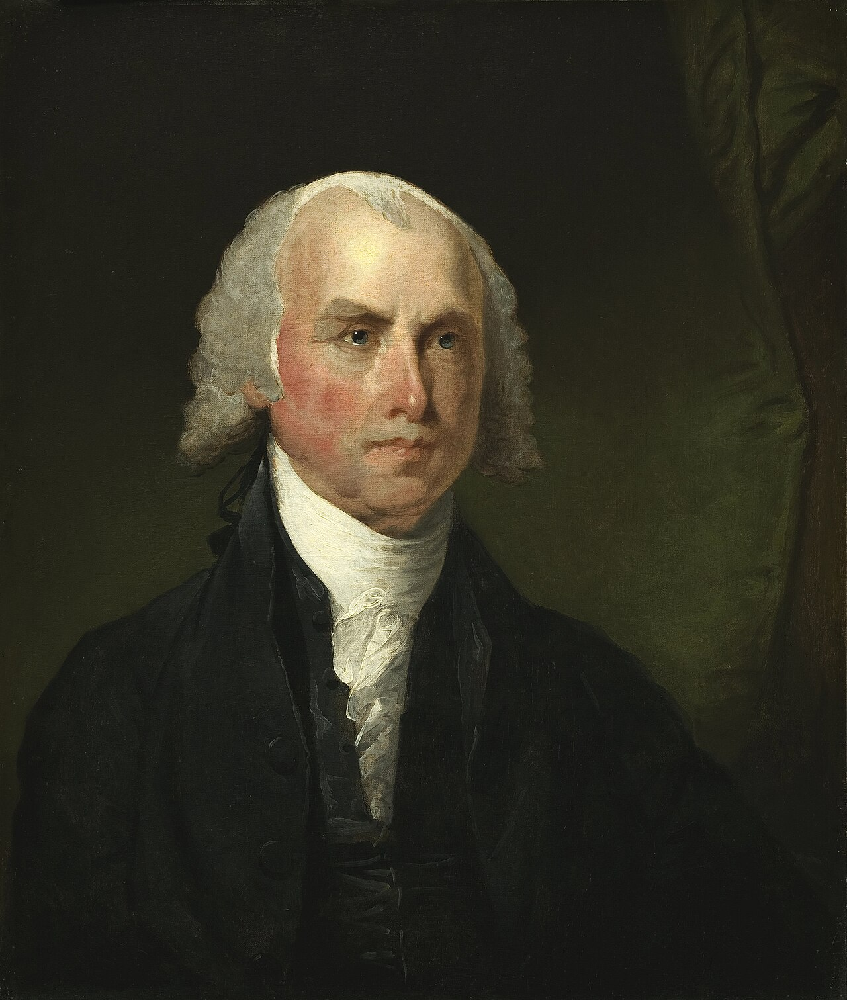
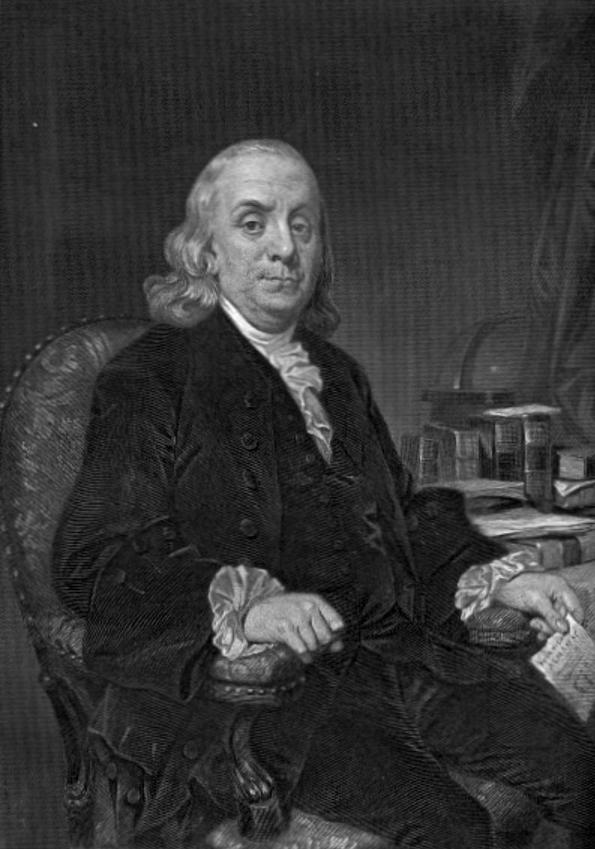

אין סמכות מיסוי ישירה
הקונגרס יכול היה לבקש כסף מן המדינות, אך לא לחייב אותן לשלם.
מפילדלפיה אל האשרור
החוקה לא נכתבה בחלל ריק. היא נולדה ממשבר שלטוני, מפשרות קשות ומוויכוח ציבורי עמוק על כוח, חירות ועתיד האיחוד.

הבעיה שקדמה לחוקה
תקנון הקונפדרציה העניק לקונגרס סמכויות מוגבלות. לממשלה המרכזית לא הייתה דרך יעילה לגבות מסים, להסדיר מסחר בין המדינות או לאכוף החלטות. מרד שייז בשנים 1786–1787 המחיש לרבים שהמסגרת הקיימת מתקשה להתמודד עם משברים.
הקונגרס יכול היה לבקש כסף מן המדינות, אך לא לחייב אותן לשלם.
המדינות קבעו כללים ומכסים משלהן ולעיתים פעלו זו נגד זו.
לא הייתה רשות מבצעת פדרלית חזקה או מערכת משפט פדרלית מלאה.
ציר הזמן
שלוש־עשרה המושבות הכריזו על עצמאותן. ההכרזה ניסחה עקרונות של זכויות טבעיות והסכמה של הנשלטים, אך עדיין לא יצרה ממשל קבוע.
המדינות הקימו איחוד רופף שבו רוב הכוח נשאר בידיהן. שינוי התקנון דרש הסכמה פה אחד, ולכן היה קשה מאוד לתקנו.
נציגים משתים־עשרה מדינות התכנסו בתחילה כדי לשפר את התקנון, אך החליטו לתכנן מסגרת חוקתית חדשה.
הוויכוח בין מדינות גדולות לקטנות נפתר באמצעות קונגרס דו־ביתי: ייצוג לפי אוכלוסייה בבית הנבחרים וייצוג שווה בסנאט.
שלושים ותשעה צירים חתמו על המסמך. החתימה לא הספיקה: נדרש אשרור של תשע מדינות כדי להכניסו לתוקף.
הפדרליסטים תמכו בחוקה החדשה; האנטי־פדרליסטים חששו מממשלה מרכזית חזקה ודרשו הגנה מפורשת על זכויות.
האשרור התשיעי מילא את התנאי שבסעיף השביעי. הממשלה החדשה החלה לפעול בשנת 1789.
עשרת התיקונים הראשונים אושררו והוסיפו הגנות מפורשות לחופש הביטוי, הדת, ההליך המשפטי וזכויות נוספות.
האנשים שמאחורי המסמך
החוקה הייתה תוצאה של עבודה משותפת ומחלוקת. הדמויות הבאות מייצגות תפקידים שונים בתהליך.

1732–1799
נשיא הוועידה
נוכחותו העניקה לוועידה יוקרה ואמון. הוא ניהל את הישיבות, אך בדרך כלל נמנע מהשתתפות פעילה בוויכוחים.

1751–1836
מתכנן ורושם מרכזי
סייע לעצב את תוכנית וירג׳יניה, תיעד את דיוני הוועידה והיה ממחברי כתבי הפדרליסט. לעיתים מכונה „אבי החוקה”.

1706–1790
מתווך וקול של פשרה
הציר המבוגר ביותר בוועידה השתמש ביוקרתו ובניסיונו כדי לעודד פשרות ולתמוך במסמך למרות חסרונותיו.

1755 או 1757–1804
תומך בממשל פדרלי חזק
קידם ממשלה מרכזית בעלת סמכויות רחבות והגן על החוקה בכתבי הפדרליסט, לצד מדיסון וג׳ון ג׳יי.
הוויכוח הגדול
טענו שממשלה פדרלית יעילה נחוצה להגנה, למסחר וליציבות. הם הדגישו שהפרדת רשויות ואיזונים ובלמים ימנעו ריכוז כוח מסוכן.
חששו שממשלה לאומית חזקה תתרחק מן האזרחים ותפגע בסמכויות המדינות ובחירויות הפרט. דרישתם המרכזית הובילה להבטחה להוסיף מגילת זכויות.
הפשרות של 1787
הוועידה יצרה מערכת שלטונית עמידה, אך כמה מן הפשרות שלה שיקפו והגנו על מוסד העבדות. חשוב ללמוד את החוקה גם כהישג פוליטי וגם כמסמך שנולד בתוך מציאות בלתי שוויונית.
יצרה שני בתי קונגרס ואיזנה בין מדינות גדולות לקטנות.
ספרה שלוש חמישיות מן האוכלוסייה המשועבדת לצורכי ייצוג ומיסוי, בלי להעניק לה זכויות.
החוקה מנעה מן הקונגרס לאסור את היבוא הבין־לאומי של עבדים לפני 1808.